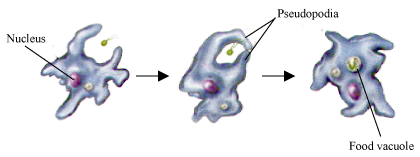

Question:1
Write one example for each of the following.
| 1. |
A gland associated with the digestive system |
.................... |
| 2. |
A digestive juice that acts only on carbohydrates |
.................... |
| 3. |
A digestive juice that acts only on facts |
.................... |
| 4. |
A digestive juice that acts only on proteins |
.................... |
| 5. |
An animal that has a four-chambered stomach |
.................... |
Solution:
- Liver
- Saliva
- Bile
- Gastric juice
- Cow
Question:2
Write one word for the following.
| 1. |
Outgrowths in Hydra that help in taking in food |
.................... |
| 2. |
A fleshy muscular organ present in the mouth |
.................... |
| 3. |
Finger-like projections found on the lining of the small intestine |
.................... |
| 4. |
The digestive juice secreted by liver |
.................... |
| 5. |
The smallest chamber in cow's stomach |
.................... |
Solution:
- Tentacles
- Tongue
- Villi
- Bile
- Omasum
Question:3
The inner wall of the stomach secretes the following.
(a) Digestive juices
(b) Hydrochloric acid
(c) Mucous
(d) All of these
Solution:
(d) All of these
The inner wall of the stomach secretes digestive juices, hydrochloric acid and also mucous.
Question:4
From the stomach, the semi-digested food that passes into the small intestine is called
(a) chyle
(b) chyme
(c) chime
(d) bile
Solution:
(b) chyme
The semi-digested food that passes into the small intestine is known as chyme.
Question:5
Which of these organs contains villi?
(a) Stomach
(b) Pancreas
(c) Small intestine
(d) Large intestine
Solution:
(c) Small intestine
The lining of the small intestine contains villi – finger like projections.
Question:6
The final products of protein digestion are
(a) amino acids
(b) glucose
(c) fatty acids
(d) glycerol
Solution:
(a) amino acids
Amino acids are the end products of protein digestion which aid in repairing worn out tissues and cells.
Question:7
Which of these helps in egestion?
(a) Mouth
(b) Anus
(c) Small intestine
(d) Stomach
Solution:
(b) Anus
The anus helps in egestion by eliminating undigested food from the body.
Question:8
Name the five stages involved in the process of nutrition in animals.
Solution:
The five steps in the process of nutrition are:
- Ingestion
- Digestion
- Absorption
- Assimilation
- Egestion
Question:9
Discuss the different types of teeth along with their structure and functions.
Solution:
There are four different types of teeth in the mouth. These are as follows:
- Incisors: Incisors or biting teeth are flat; blade shaped front teeth which help in cutting the food.
- Canine: Canines or tearing teeth are sharp-edged teeth found beside the incisors, which help in tearing the food.
- Premolar: Premolars are broad surfaced teeth which are located between canines and molars. They help in chewing and grinding the food.
- Molar: Molars are large teeth found towards the back of the mouth. They help in chewing the food as they have a wide grinding surface.
Question:10
What do you understand by the term assimilation?
Solution:
Assimilation is a process in which simpler food substances are utilised in building complex substances required by the body for its growth and development.
Question:11
Match the following
| Column A |
Column B |
| Amoeba |
Pancreatic juice |
| Stomach |
Pseudopodia |
| Liver |
Abomasum |
| Pancreas |
Hydrochloric acid |
| Ruminants |
Bile |
Solution:
| Column A |
Column B |
| Amoeba |
Pseudopodia |
| Stomach |
Hydrochloric acid |
| Liver |
Bile |
| Pancreas |
Pancreatic juice |
| Ruminants |
Abomasum |
Question:12
With the help of labelled diagrams, describe nutrition in Amoeba.
Solution:
Nutrition in amoeba takes place in five steps:
During ingestion, Amoeba forms finger like projections called pseudopodia which engulf the food and form a cavity called food vacuole. Digestion takes place in the food vacuole with the help of digestive juices secreted by it. After digestion, food is absorbed and assimilated and the undigested food is egested out of its body.

Question:13
Describe how food gets digested and assimilated in the human digestive system.
Solution:
The process of digestion in the human body begins in the mouth where the food is chewed and mixed thoroughly with saliva. Saliva begins the breakdown of carbohydrates in the food. The chewed food is then swallowed. The swallowed food reaches the stomach and gets semi digested before it reaches the small intestine where the food is digested completely. The digestive juices of the various organs of the body aid in the breakdown of the food into its simpler forms.
Assimilation: After the food is digested, the simpler forms of food absorbed by the blood are taken to the various organs and the muscles of the body through the blood vessels, which aid in the growth and development of the body.
Question:14
Explain the role played by different digestive juices in digestion and the organs which secrete them.
Solution:
Digestive juices secreted by various organs such as salivary glands in the mouth, stomach, liver and pancreas help in the process of digestion of food.
- Saliva secreted by the salivary glands in the mouth aids in the breakdown of starch present in the food to simple sugar.
- Digestive juices secreted by the inner walls of the stomach aid in the breakdown of protein into simpler food forms
- Bile secreted by the liver helps in the digestion of fats.
- Pancreatic juice secreted by pancreas aids in the breakdown of carbohydrates into sugars, proteins into amino acids and fats into fatty acids.
Question:15
Describe the process of digestion in ruminants.
Solution:
Digestion in ruminants takes place in their four- chambered stomach and end in the small intestine. The four chambers are:
(a) Rumen: The partial digestion of food takes place in this chamber.
(b) Reticulum: The partially digested food is moved back to the mouth to be re-chewed through this chamber.
(c) Omasum: This chamber helps in absorbing excess water
(d) Abomasum: The digestive juices secreted by the walls of the abomasum help in the absorption of food and pass it into the small intestine.
Small intestines: In the small intestines, absorpotion of the food passed from the abomasum begins. Simultaneously, bile and pancreatic juice is mixed with the food in the small intestine to allow digestion of carbohydrates, fats and proteins.
Question:16
Differentiate between ingestion and egestion.
Solution:
| Ingestion |
Egestion |
| The process of consumption of food into body is called ingestion. |
The process of elimination of undigested food out of the body is called egestion. |
| Food is taken into the body through the mouth. |
Undigested food is eliminated out of the body through the anus. |
Question:17
What do you understand by rumination? Name two ruminants.
Solution:
Rumination is a process of re-chewing the swallowed food by bringing it back to the mouth. Ruminants are plant-eating animals such as cows and sheep.